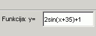
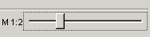

Jums tereikia parašyti funkcijos lygtį (be „y=“) tam skirtame lauke (1 pav.)

1 pav. Lygties laukas
Norėčiau pastebėti, kad lygtį reikėtų įvesti be tarpų ir be daugybos ir laipsnių ženklų — kaip parodyta pavyzdyje. Lygties trafaretas yra toks:
Afunkcija(Bx+C)+D,
kur funkcija yra sin, cos, tg arba ctg, o A, B, C (laipsniais) ir D — koeficientai. Lieka tik paspausti mygtuką „Braižyti“ arba paspausti klavišą Enter (Return).
Pagrindiniame lauke reikia paspausti mygtuką „Spalva“ (arba Nuostatos —> Spalva), išrinkti nauja spalvą ir paspausti „OK“. Kitas Jūsų nubraižytas grafikas bus išrinktos spalvos.
Redaguoti —> Ištrinti visus (arba mygtukas Ištrinti) ištrins visus grafikus, o Redaguoti —> Ištrinti paskutinį — tik paskutinį.
Iš pradžių jį reikėtų paleisti: Rinkmena —> Pradėti testą. Spauskite „Pradėti“. Iš pateiktų variantų Jus turite išrinkti vieną teisinga ir paspausti „Įvesti“. Iš viso yra 10 klausimų, testas turėtų būti atliktas 10 minučių. Po visos užduoties bus pateiktas pažymys. Už atsakymus, kurie bus pateikti po 10 minučių, programa taškų neužskaičiuos. Testą galima kartoti kelis kartus.
Jus turite galimybę keisti braižančio grafikus lango mastelį (nuo M1:1 iki M1:5). Tam tiesiog reikia pakeisti reguliatoriaus padėtį (2 pav.).

2 pav. Mastelio reguliatorius
Rinkmena —>Išsaugoti sesiją išsaugos Jūsų darbą. Grįžti prie jo galima per Rinkmena —>Atidaryti sesiją.
Programa pasistengs suprasti Jūsų įvestą lygtį, bet jei Jus kažką įvesite, tai ji kažką ir nubraižys. Yra galimybė, kad po Jūsų komandos nebus jokių pasikeitimų.
Funkcijų f(x)=tg(x) ir f(x)=ctg(x) reikšmių sritis yra begalybė. Ir tam, kad programa nebraižytų grafiko be galo ilgai, ji kartais nupjauna grafiko dalį. Pakeiskite lango dydį — grafikas atrodys taip, kaip jis turėtų atrodyti.
Jums reikia pelyte patraukti koordinačių plokštumą į reikiamą pusę. Pelytės paspaudimas bet kurioj vietoj grąžins plokštumą į pradinę poziciją.